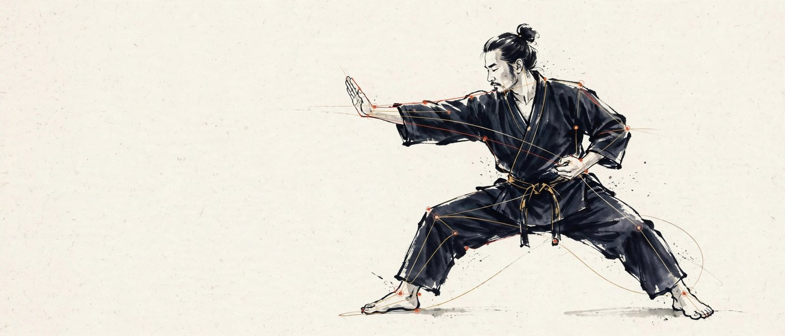
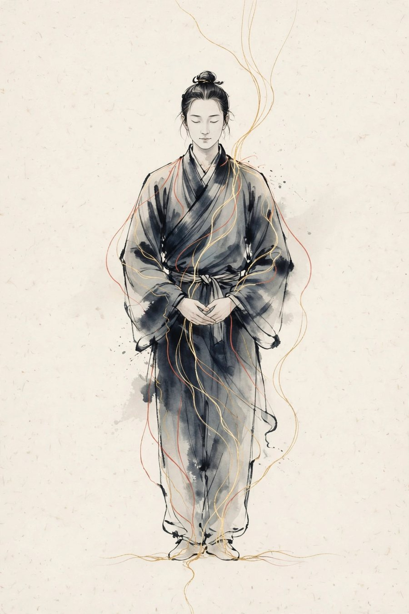

DMA武術ラボ
武術のバイオメカニクスと経絡
力を、身体の仕組みから読む。
DMAは、武術の動きを「身体の仕組み」から読み解くことをテーマにする武術団体です。重心、関節、筋肉の連なりといった身体力学（バイオメカニクス）と、中医学の伝統理論である経絡。この二つの物差しで同じ動作を測ると、型や稽古で受け継がれてきた「コツ」の多くに、説明のつく理由が見えてきます。本サイトでは団体の紹介と活動に加え、その研究の入口となる理論コラムを公開します。
4つのカテゴリ


DMAとは（要約）
DMAは、武術を「強さの競い合い」としてだけでなく、「身体の使い方の研究」として捉え直す団体です。突く、受ける、歩く、投げる——どの動作も、骨格の並び、重心の位置、力の伝わる順序によって結果が変わります。そこに経絡という伝統的な身体の見取り図を重ねると、古典が言葉で残してきた身体観と、現代の運動学が指す構造とが、思いがけないところで一致します。その一致とずれの両方を確かめることが、DMAの研究の中心です。詳しくは団体紹介へ。
理論コラムは二つの物差しで書かれます。力学の側では、造語を使わず、解剖学・運動学・物理学の標準用語だけで動作を分解します。伝統の側では、経絡・経穴・丹田といった中医学の専門概念と、歴史的に定着した伝統武術の用語で、古典の身体観をそのままの言葉で読みます。

理論コラム（最新）
経絡と武術
丹田と重心 — 二つの物差しが指す一点
伝統が「丹田に気を集める」と言い、力学が「重心を安定させよ」と言う。三丹田・五丹田説から古典、経絡、腹腔内圧まで、二つの物差しが指す一点を総合的に読みます。